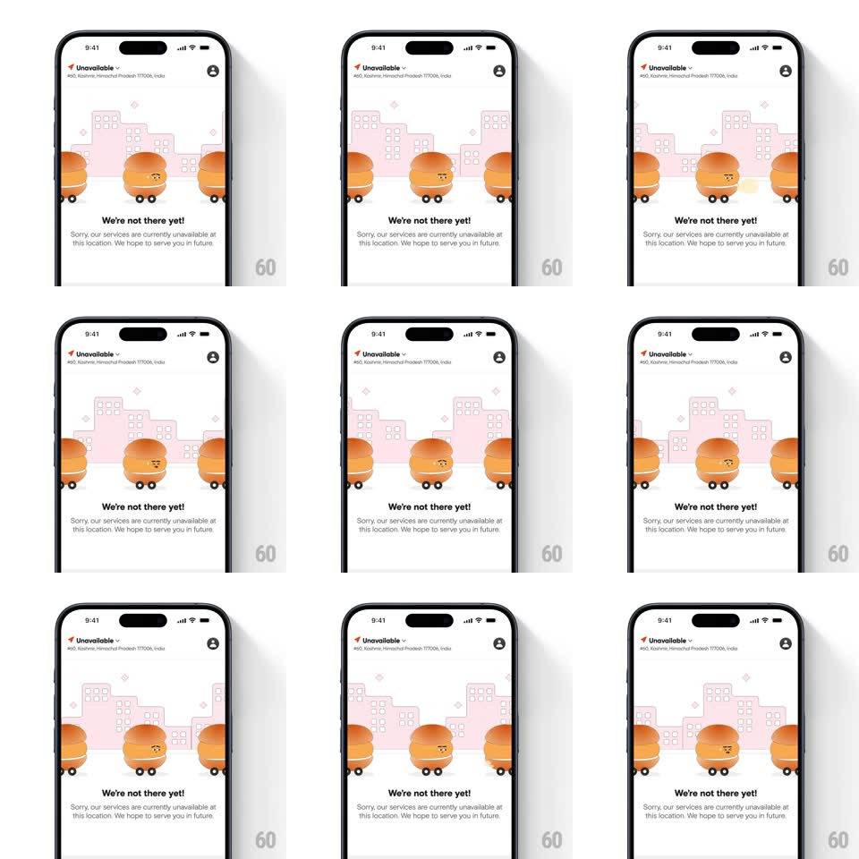

Media
Frame-by-frame

Rebuild this interaction 1:1: Swiggy's location-unavailable empty state - a looping scene of burger mascots on wheels rolling across a pink cityscape under "We're not there yet!" copy.

Rebuild this interaction 1:1: Swiggy's location-unavailable empty state - a looping scene of burger mascots on wheels rolling across a pink cityscape under "We're not there yet!" copy. ## Integration Integration: stack-agnostic spec - springs given as stiffness/damping, timed motions as duration + curve; map every value to your framework and animation library of choice. ## Scene A white page: header with "Unavailable" location, then the illustration - a pink line-art cityscape with sparkle accents, and three burger characters on skateboard wheels rolling across the midline. Below: "We're not there yet!" and "Sorry, our services are currently unavailable at this location. We hope to serve you in future." ## Motion spec Pattern: looping ambient mascot parade. - The three burgers roll left-to-right across the illustration in a loop: constant slow speed (full crossing ~6s), staggered so roughly one burger is always mid-frame. - Wheels spin continuously (rotation synced to travel speed); each burger bobs gently (translateY +/- 4pt, 1.2s) and sways (rotate +/- 3deg) as it rolls. - The burger faces blink every ~2.5s (eye scaleY 1 -> 0.1 -> 1, 150ms) at staggered times. - City sparkles twinkle in the background (opacity 0.2 -> 1 -> 0.2, randomized phases, 2s loops). - The copy block is static; the scene loops forever behind it. ## Calibration - Rolling speed is leisurely - the loop should read as calm, not frantic. - Keep the burger spacing uneven so it feels like a parade, not a conveyor. ## Reduced motion Single static frame: three burgers parked, sparkles at mid-opacity. ## Don't miss - The center burger is slightly larger and leads the pack. - Burgers wrap off-screen cleanly - exit right edge, re-enter left, no pop.